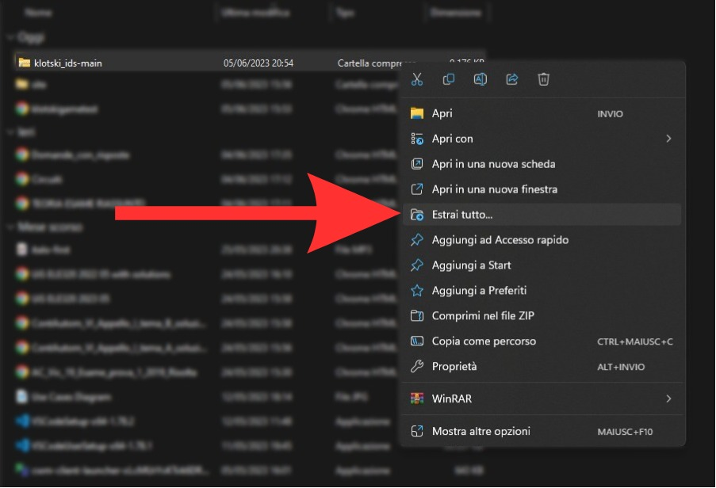
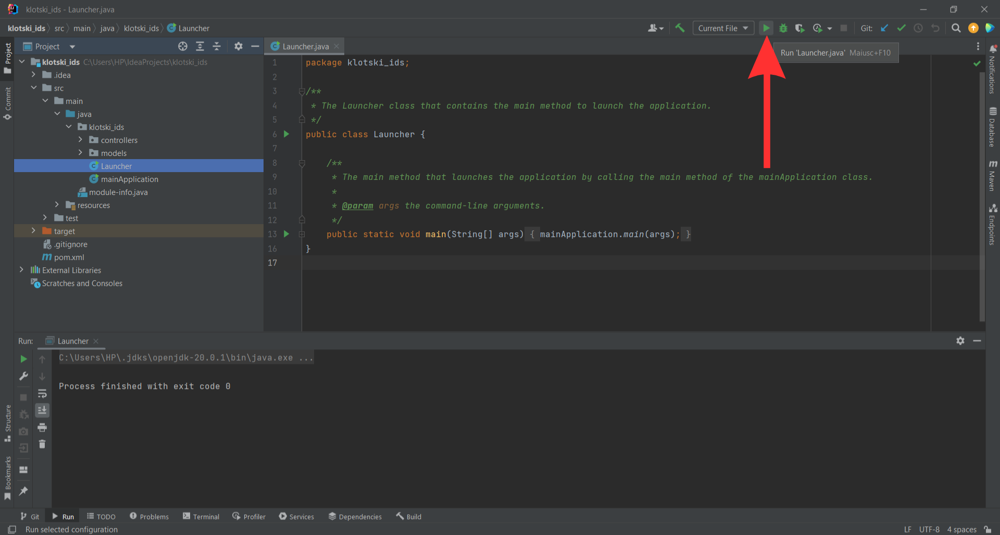

Manual
In this section all the steps to download, run and use the program are explained.
There is also a subsection containing the descriptions of external projects that have
contributed to the development of this software.
Download
Follow these steps to download the software:
{kind=link}
{kind=link}
Execute
Follow these steps to execute the software on your system:
- Unzip the downloaded folder. 
- Open the folder on your IDE the klotski_ids-main/klotski_ids directory as a Maven project (many IDEs automatically recognize the program as a Maven project)
- Run the file: .\src\main\java\klotski_ids\Launcher.java or .\src\main\java\klotski_ids\mainApplication.java 
{kind=link}
{kind=link}
- Open the terminal in the directory where the zip folder is located.
- Run this command:
>unzip klotski_ids-main.zip && cd klotski_ids-main - Open the folder on your IDE the ./klotski_ids directory as a Maven project (many IDEs automatically recognize the program as a Maven project)
- Run the file: .\src\main\java\klotski_ids\Launcher.java or .\src\main\java\klotski_ids\mainApplication.java
Requirements
Be aware that in order to execute the software, Java must be installed on
your computer.
It is also important to notice that the project has been developed and tested using the JDK 20
therefore some bugs may appear if you run it
with an older version of java.
If you want to be able to use the funcionality "Next Best Move", Python is
required.
Download Java and Python following these links:
To use this release version of the software you need to build the project locally on your system. An IDE with maven such as Intellij IDEA or Eclipse is therefore required. Download an IDE following these links:
Game Rules
The rules of the game can be studied at the klotski page in wikipedia.